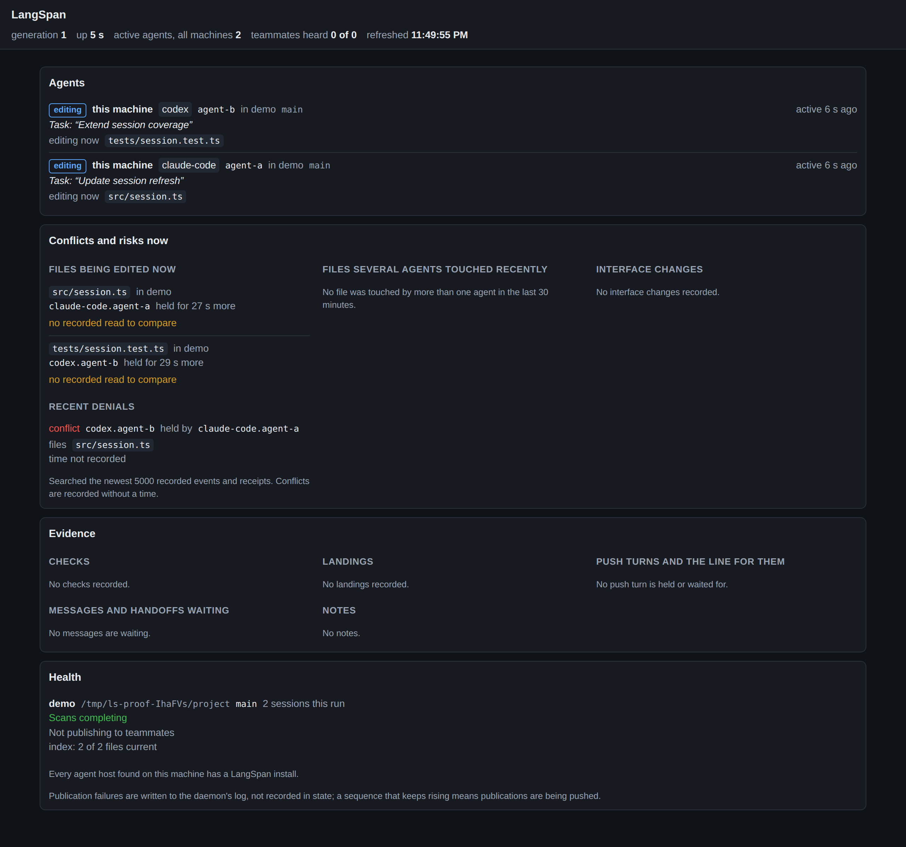

AAgent ASession refreshWorking
{ }
src/auth/session.tsexport refreshSession()
+ refresh token handling
+ refresh token handling
Edit reported

v0.1.0 releasedOpen source for macOS and Linux
LangSpan gives your coding agents shared context, catches supported local edit overlaps and keeps teammates in view across machines.
The pace changed. The need to collaborate didn’t.
“I’ll take that.”
“It’s already done.”
The team is ready. The work has moved on.One agent changes an interface while another builds against it. A teammate offers to help, but the task is already finished. Keeping everyone informed becomes another job.
Separate branches help isolate edits, but they cannot tell an agent that a teammate is changing the interface it depends on.
LangSpan is built to help the team stay in the work.
Two agent sessions share one checkout. LangSpan refuses a supported overlapping edit while the hold is active. The second agent chooses an independent file.
src/auth/session.tsAdmitted · active in this checkout
Overlapping edit caught.
tests/session.test.tsAdmitted · different file
Separate work keeps moving.Agents choose their next action.
Illustrated local coordination in one checkout
Supported edits in the same checkout, while an active hold is valid. LangSpan refuses the overlap; the agent chooses another task. Your host’s permissions still apply. Writes outside hooks and edits approved after a hold expires can still proceed.
Read the implementation evidenceLangSpan fits around the sessions your team already runs. Start with one checkout. Share more context as the work spreads out.
Check supported edits against current file and region holds. Independent edits stay available.
One checkoutGive each agent its own worktree while keeping related tasks and file activity in view.
Several worktreesExchange work updates through your Git remote. Remote information informs local work; it doesn’t lock it.
Other machinesCLI, hooks and MCP. An optional read-only view for the humans.
Native sessions, a two-machine run, and a reproducible coordinator test. Each answers a different question.
Recorded from LangSpan v0.1.0
The optional dashboard shows which files the agents hold and where LangSpan refused an overlap. Here is the result of one controlled run.
src/session.ts
tests/session.test.tsTwo excerpts from the same real dashboard capture. Scripted hook events, no live model invoked.
A real Codex session received an overlap refusal naming the holder and function, and a stale edit was admitted after a reread.
Claude Code and Codex received briefings between a Mac and a cloud machine through GitHub. A change of approach caused by the briefing was not demonstrated.
A reproducible scenario exercises local holds, remote awareness and checks on a combined Git tree. It supplies host-shaped events; no model runs.
Less team rework and less manual relay remain product hypotheses. See the implementation status for the full coverage and remaining limits.
Our mission
Different expertise. Better questions. Another pair of eyes. The value of a team doesn’t disappear when agents write the code.
Our mission is to help teams keep building together at that pace. We’ll judge it by useful work moving in parallel, less avoidable repair, and the same standard of checks and review.
Our mission and measuresv0.1.0macOS and Linux
Download the binary, start your coordinator, then connect the project your agents will edit. No hosted account is required.
Download LangSpanApache-2.0 source, checksums, software bills of materials and build provenance are available. Linux requires glibc 2.35 or newer. macOS binaries are not Apple Developer ID-signed.
Verify a downloadChoose your platform. Run uname -m if you’re unsure of your processor.
SHA256SUMS and release notes and SBOMs. Verify the archive, extract it, then run from the extracted folder:
mkdir -p "$HOME/.local/bin"
install -m 0755 langspan "$HOME/.local/bin/langspan"
export PATH="$HOME/.local/bin:$PATH"
langspan --versionAdd the PATH entry to your shell startup file if needed. Prefer to compile? Build from source. Homebrew is not available yet.
Keep this terminal running. Local sessions share the same coordinator and state directory.
langspan daemonIn another terminal, preview the settings. Use your project’s actual path, then add --apply after review.
langspan hooks install claude-code \
--workspace my-project \
--root /absolute/path/to/projectlangspan hooks install codex \
--workspace my-project \
--root /absolute/path/to/projectIn Codex, review and trust the hooks with /hooks.
Your host’s permissions still apply. Prompt summaries include the first task line locally by default; use --prompt-summary off to omit it.
Open your agents normally in the checkout. Inspect the setup and work records in another terminal.
langspan doctor --root /absolute/path/to/project
langspan status
langspan dashboard --openThe dashboard is optional and read-only. Full setup, user-level installation and removal.
Both. LangSpan is built around teams working on connected parts of a project. A solo developer running several agents has the same need for shared awareness and is a useful place to start.
Keep your existing sessions. Project hooks add briefings and edit checks to supported operations. CLI and MCP access let other tools inspect and contribute to the work records. The optional dashboard is read-only.
No. Coordination covers supported operations while their holds are active. Writes outside hooks, some shell rewrites, and edits approved after a hold expires can still proceed. LangSpan complements your agent’s own permissions and your team’s checks and review.
Local coordination stays in local state. Remote sharing is opt-in through your Git remote. It shares work metadata such as branch and file activity; source content is excluded and task text needs its own opt-in. Remote work informs briefings and never denies a local edit.
The v0.1.0 release includes Linux and macOS binaries for ARM64 and x86-64. Claude Code and Codex have retained native-session evidence. Cursor and Gemini CLI adapters are implemented but haven’t been verified in live sessions. Homebrew and Windows support aren’t available yet.
The hero and interactive walkthrough are authored illustrations of supported workflows. They run locally in your browser, without an agent or daemon. Real-session observations and remaining gaps are recorded in the implementation evidence.